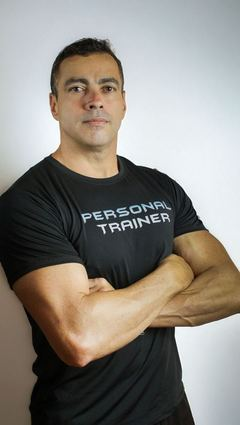
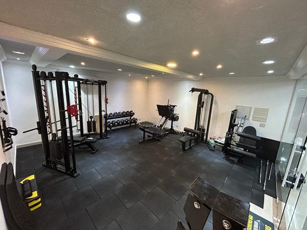
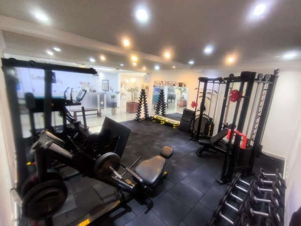
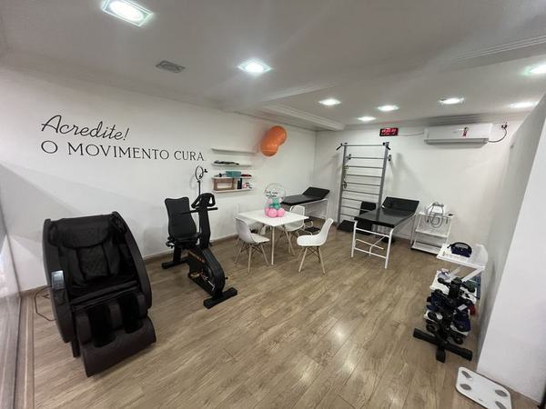
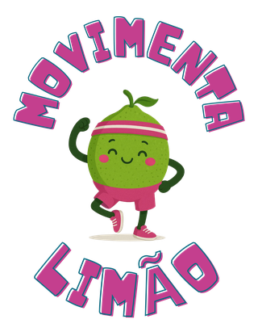
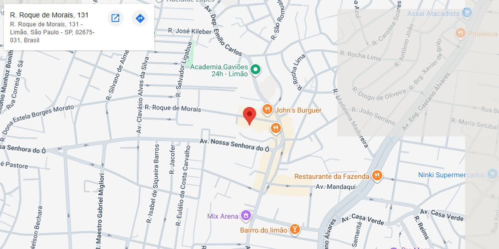

Fisioterapia e Reabilitação no Limão, Zona Norte de SP
Acredite!o movimento cura.
Fisioterapia, treino e acupuntura na mesma equipe, com um plano só pra sua dor, sua fase e sua rotina. Na clínica do Limão ou na sua casa.
Serviços
O que está te tirando
do movimento?
Escolha pelo que você sente. Todo tratamento começa pelo mapeamento funcional.
Dor na coluna
Lombar, cervical, hérnia de disco, ciático.
→Pós-operatório
Joelho, quadril, ombro, coluna e fraturas.
→Joelho, ombro e articulações
Dor pra agachar, subir escada, levantar o braço.
→Equilíbrio e idosos
Mais força e autonomia, menos medo de cair.
→Postura (RPG)
Costas, pescoço e ombros tratados como um todo.
→Força com segurança
Musculação terapêutica na sala da clínica.
→Acupuntura
Pra dor e ansiedade, com especialista em MTC.
→Body Harmony
Eletroestimulação pra composição corporal.
→Metodologia própria
Aqui não tem sessão solta. Tem uma R.O.T.A.
Cada pessoa é única e merece um plano que começa muito antes do primeiro exercício. São quatro etapas pra que o cuidado tenha propósito e resultado.
Rastreamento
O mapeamento funcional: a dor, as limitações, o histórico e o que pode estar contribuindo pro problema, não só onde dói.
Orientação
A gente explica com clareza o que encontrou, os objetivos e o que muda na rotina. Você entende o próprio corpo.
Tratamento assertivo
Técnicas, exercícios e recursos escolhidos pro que você precisa, não um protocolo igual pra todo mundo.
Acompanhamento
Evolução acompanhada e plano ajustado. O objetivo não é cumprir sessões: é recuperar movimento e qualidade de vida.
Você não precisa só de fisioterapia. Precisa de uma R.O.T.A.
Começar pelo mapeamentoFisioterapia domiciliar
Não dá pra vir até a clínica? A gente vai até você.
A mesma avaliação e o mesmo método, no conforto de casa. Pra quem acabou de operar, tem dificuldade de locomoção ou dor que impede sair.
- Pós-operatório nas semanas em que sair ainda é difícil
- Idosos com perda de força, equilíbrio ou medo de cair
- Quando der, o tratamento continua na clínica
Quem cuida de você
Uma equipe, um só objetivo: seu movimento de volta
Fisioterapia, treino e acupuntura conversando sobre o mesmo paciente.
Juliana
Fisioterapeuta e fundadoraOrtopedia e Traumatologia pela Santa Casa de SP · 14 anos de experiência · Diploma de Reconhecimento aos Profissionais da Saúde pela Alesp (2026)
Gabriela
FisioterapeutaUNIFESP · mestrado pela UNICAMP · especialista em Gerontologia
Estefani
FisioterapeutaGraduada em Fisioterapia · especializando-se em Fisioterapia Domiciliar · dedicada ao atendimento em casa

Michael
Personal trainer e cofundadorEducação Física · Bombeiro Militar · 2º lugar em Atividade Física no Guia Zona Norte Awards (2025)
Thalita
AcupunturistaPós-graduada em Medicina Tradicional Chinesa · 10 anos de experiência
Nossa estrutura
Equipada pra cada etapa
da reabilitação
Duas lojas na R. Roque de Morais: a fisioterapia na Loja 01 e a musculação na Loja 03.



Grupo 60+
Pra quem tem mais de 60 anos. Além do trabalho corporal, estimulação cognitiva: memória, atenção e coordenação motora.
Conhecer o Grupo 60+ →Movimenta Limão
Ações de saúde pro bairro do Limão, mantidas pela equipe da Dias Gomes.
Saiba mais →
"Acolhimento e profissionalismo, assim fui recebida nessa clínica."Paciente, no Google
"Foi boa, cheguei para o grupo de idosos 60+, gostei do grupo."Paciente do Grupo 60+, no Google
Dúvidas
Antes de agendar
Não achou a sua? Manda no WhatsApp que a gente responde.
Vocês atendem convênio?
Não. O atendimento da Dias Gomes é particular, na clínica e em casa.
Como começa o tratamento?
Pelo mapeamento funcional, a avaliação em que a gente entende a sua dor, as limitações e o histórico. É dele que sai o seu plano.
Preciso de pedido médico?
Não é obrigatório pra começar a avaliação. Se você já tem diagnóstico ou exames, traga na primeira consulta.
Vocês atendem em casa?
Sim, no Limão, na Casa Verde, na Freguesia do Ó, na Vila Nova Cachoeirinha e em Santana. Ver como funciona.
Quanto custa?
Depende do tratamento e da frequência. A gente passa o valor pelo WhatsApp depois de entender o seu caso.
Onde estamos
No Limão, fácil de chegar.
Loja 01 (fisioterapia) · Loja 03 (musculação)
Limão, São Paulo · 02675-031
Atendimento só com hora marcada.

Abrir no Google Maps →Pronta pra recuperaro seu movimento?
Agende o mapeamento funcional e comece a reabilitação com quem entende do assunto.
Agendar pelo WhatsApp